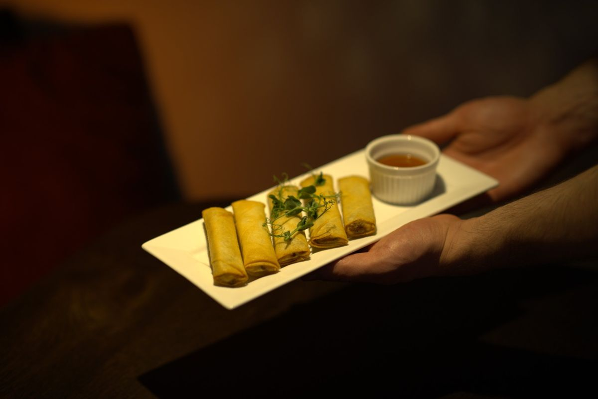
Lunch
Soepen, schiacciata met pulled pork of beef rendang, een 12-uurtje of een uitsmijter.
do t/m zo, 11:00 – 16:00vanaf € 8,50
Meer info
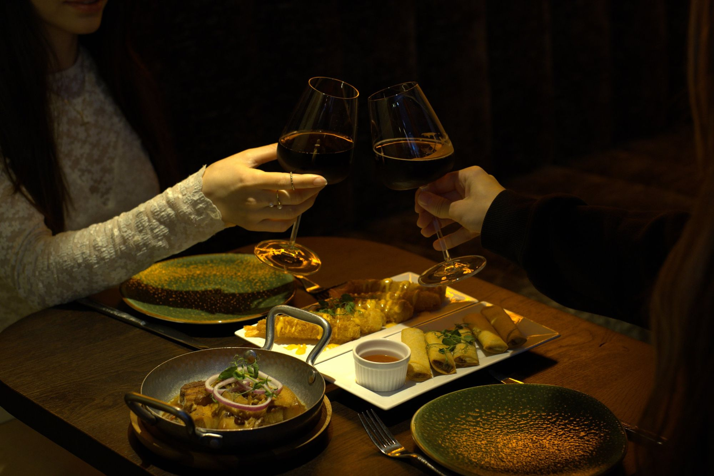
Echte Filipijnse gerechten, met liefde en gastvrijheid geserveerd: zoet, zout en zuur in balans. Lunch, diner en catering aan de Brugstraat.
Bestel per persoon, of zet alles in het midden van de tafel en deel samen.

Soepen, schiacciata met pulled pork of beef rendang, een 12-uurtje of een uitsmijter.
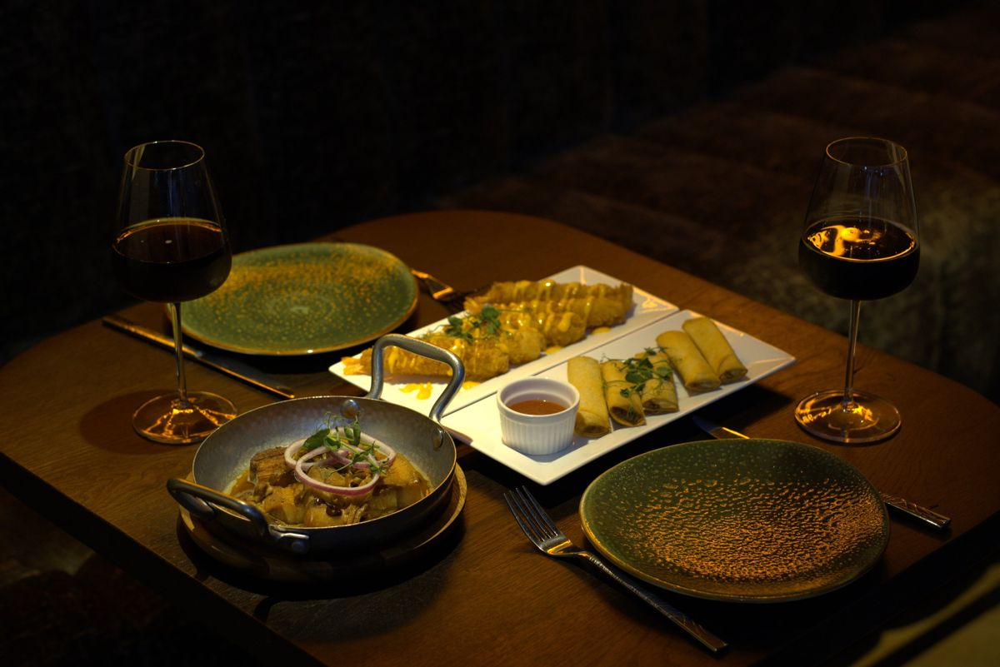
Kare-kare, adobo, sisig en bistek tagalog. Met gestoomde rijst of knoflookrijst.
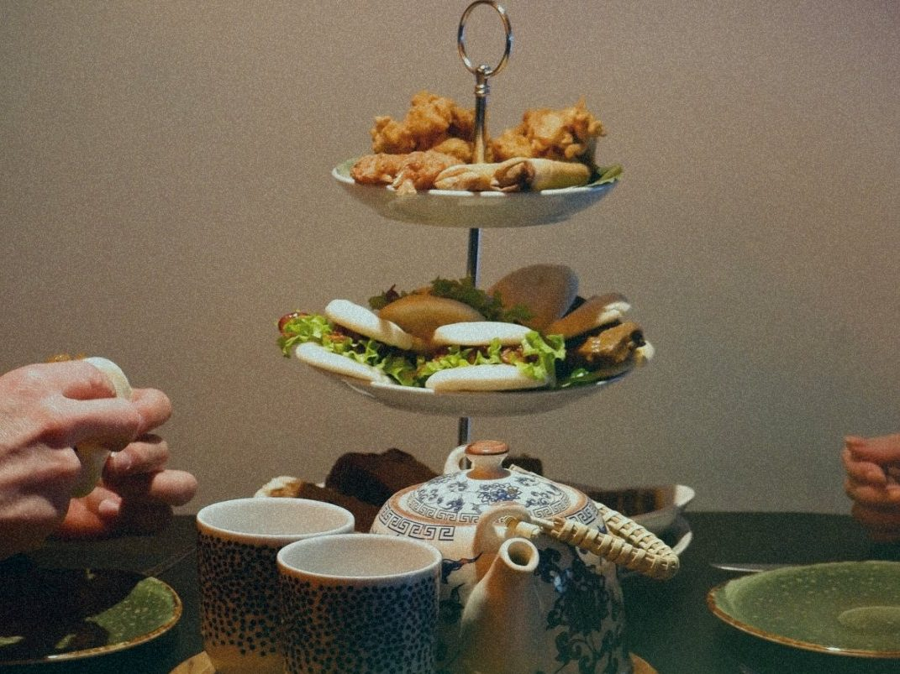
Onbeperkt thee voor twee, met onze populairste Filipijnse hapjes en zoetigheden.
Een warme plek om samen te eten, met uitzicht op het water van Klundert.
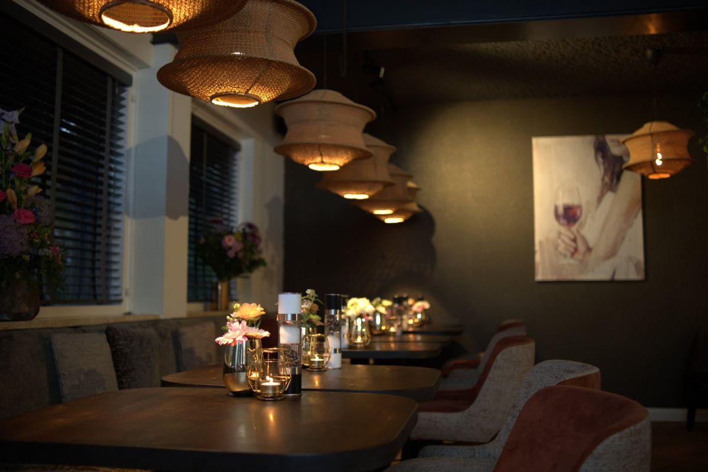
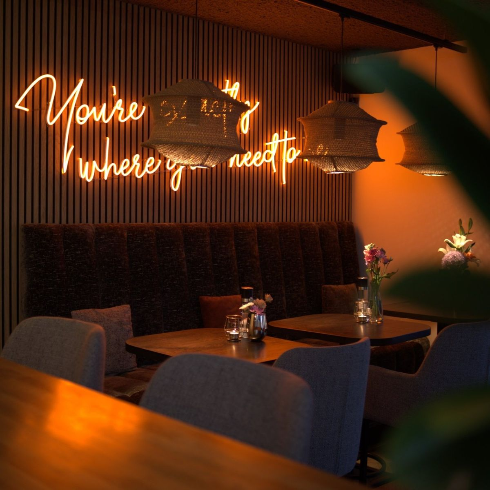
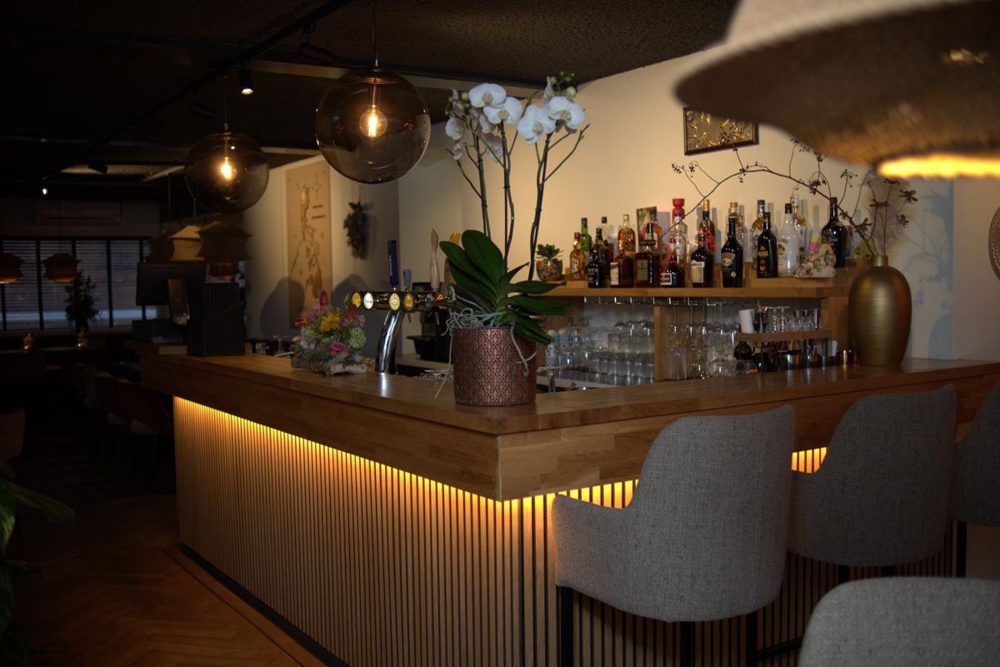
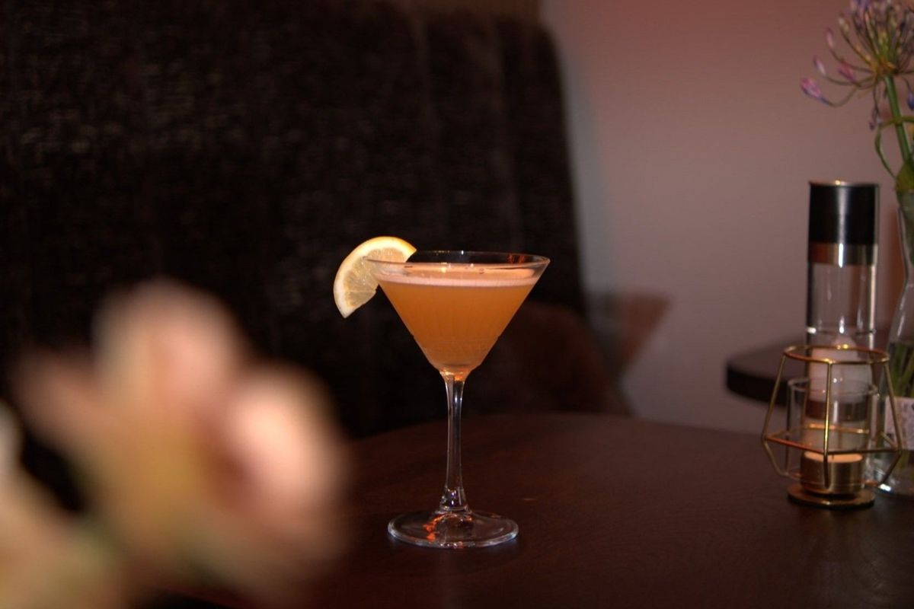
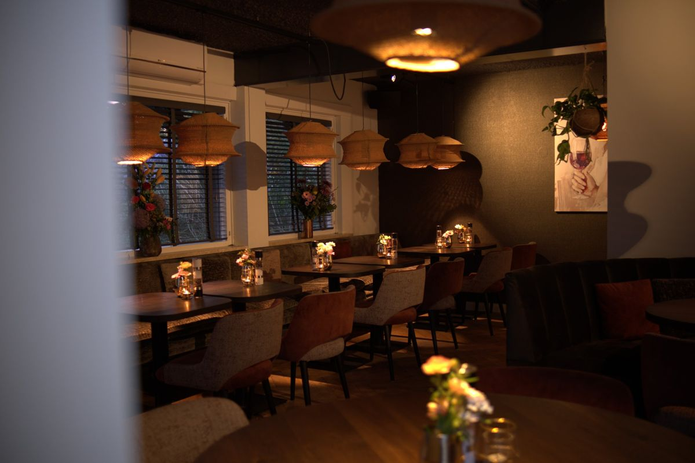
Hazel's Cusina begon als cateraar. Voor een bruiloft, jubileum of bedrijfsfeest verzorgen we nog steeds het hele feest.
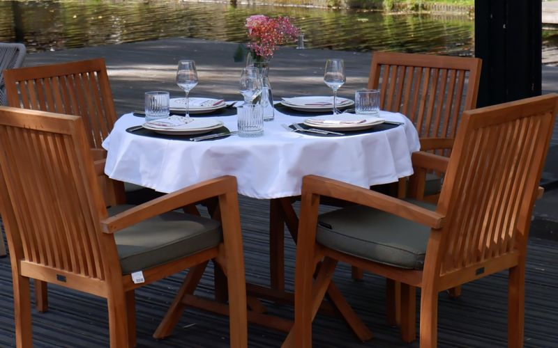
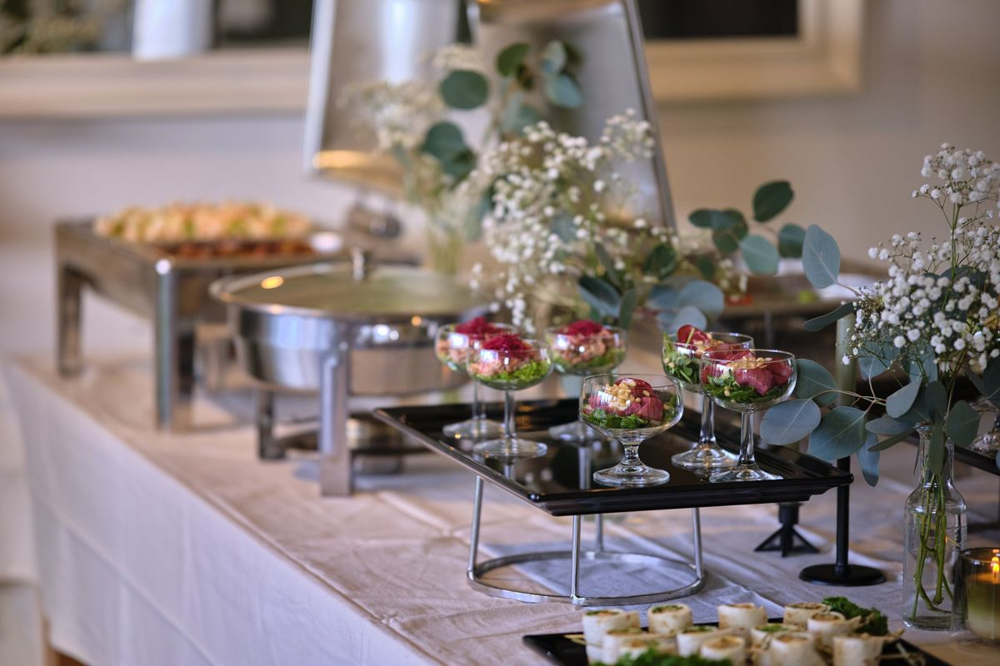
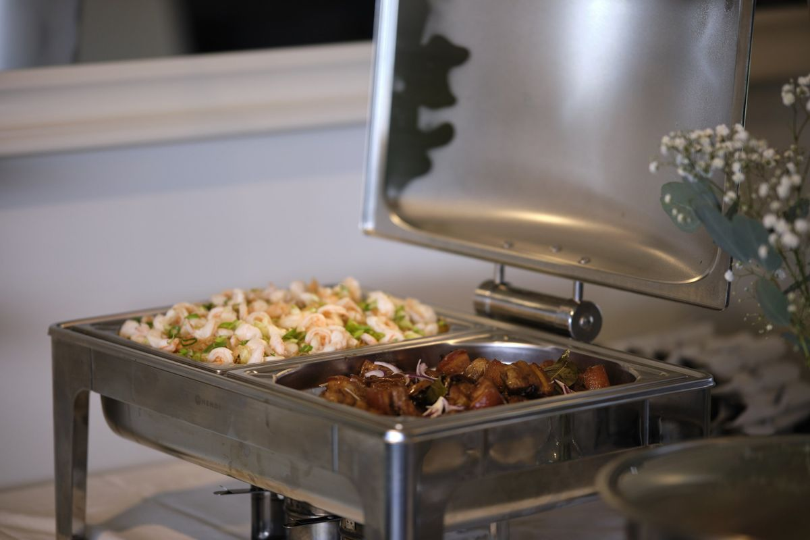
Van bloemstukken tot tafelopmaak: we richten alles in naar jullie wensen, met authentiek Filipijns eten erbij.
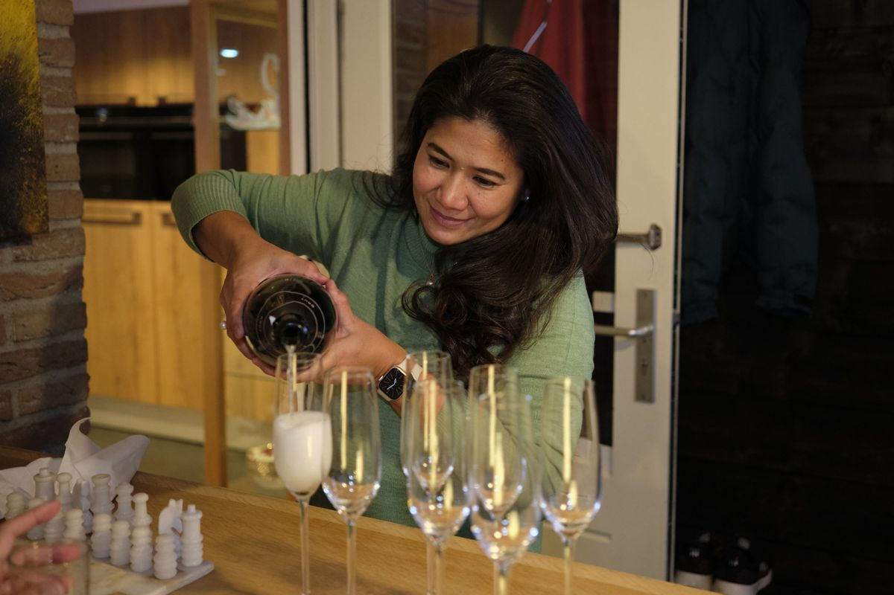
Hazel's Cusina begon klein. Hazel, een kok met diepe wortels in de Filipijnse keuken, kookte voor vrienden, familie en mensen uit het dorp.
Na jaren catering opende ze de deuren van Hazel's Cusina Restaurant & Catering. Het idee was simpel: een plek waar je samenkomt, tot rust komt en de echte smaak van de Filipijnen proeft, met liefde en gastvrijheid geserveerd.
“En wauw! Wat een heerlijk gerecht. Heerlijk crunchy van buiten door het frituren, maar super mals van binnen.”
Arnaud de Klerk over de Crispy Pork Kare-Kare, Eet.nu
We nemen reserveringen aan tot een maand vooruit, voor gezelschappen tot tien personen. Groter gezelschap of catering? Zet het in de opmerkingen.
Dit is een voorbeeldontwerp. In de echte site komt je reservering direct bij Hazel's Cusina binnen.
Een Filipijnse twist op de lunch: schiacciata met beef rendang of bistek tagalog, of gewoon een soep, 12-uurtje of uitsmijter.
Langzaam gegaarde beef rendang in kokosmelk, gember en citroengras
Biefstuk in soja, knoflook en zwarte peper
5 knapperige loempia's met zoete chilisaus
Geroosterde pompoen met room (vega)
Brood, kroket, spiegelei met kaas en soep
Kies een gerecht per persoon, of zet alles in het midden van de tafel om samen te delen. Bij je eerste bestelling krijg je een gratis portie rijst per persoon.
Krokant buikspek met romige pindasaus en groenten
Kip in sojasaus, azijn, knoflook en laurier
Varkensbuik met uien en chilipepers (pittig)
Biefstuk in soja, knoflook en zwarte peper
Het geliefdste dessert van de Filipijnen
Merienda is de Filipijnse versie van de high tea. Onbeperkt thee voor twee, met een selectie van onze populairste Filipijnse hapjes en zoetigheden.
Een fijne manier om even rustig aan te doen, samen te delen en de klassieke high tea eens anders te proeven.
Alleen op reservering.